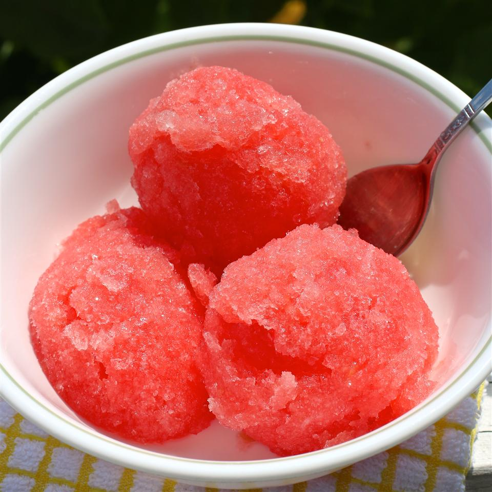

Watermelon Sorbert
By: Cooking in FL

Description
If you love watermelon and love sorbet, you're bound to love this simple recipe!
Ingredients
- White Sugar
- Water
- Lemon Juice
- Seeded Watermelon
Steps
- Combine sugar, water, and lemon juice in a saucepan over medium heat; cook and stir until sugar is dissolved, about 5 minutes.
- Remove from heat and refrigerate until cooled, about 30 minutes.
- Blend watermelon in a blender or food processor until pureed.
- Stir pureed watermelon into sugar mixture.
- Transfer watermelon mixture to an ice cream maker and freeze according to manufacturer's instructions.